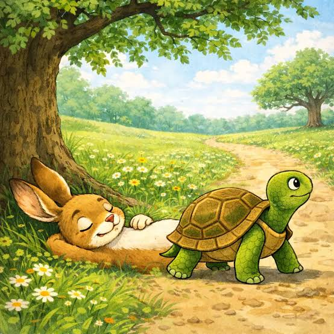

Slow and steady wins the race.

One day, a hare was very proud of how fast he could run. He often laughed at a slow-moving tortoise. "You are so slow," said the hare. "You will never win a race against me." The tortoise smiled calmly and replied, "Speed is not everything. Let us have a race." All the animals gathered to watch. As soon as the race began, the hare ran far ahead. Looking back, he saw the tortoise moving very slowly. The hare laughed and said, "I have plenty of time." He lay down under a shady tree and soon fell asleep. Meanwhile, the tortoise kept walking slowly but steadily. He did not stop or look back. After some time, the hare woke up. He was shocked to see the tortoise almost at the finish line. The hare ran as fast as he could, but it was too late. The tortoise crossed the finish line first. All the animals cheered loudly. The hare felt ashamed. He admitted that overconfidence and laziness had caused his defeat. The tortoise smiled and said, "Success comes to those who keep trying without giving up."
Slow and steady wins the race.